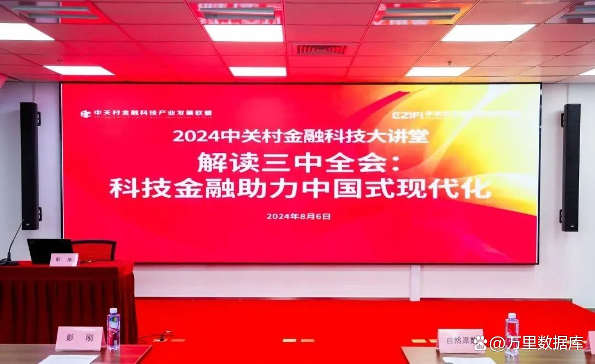
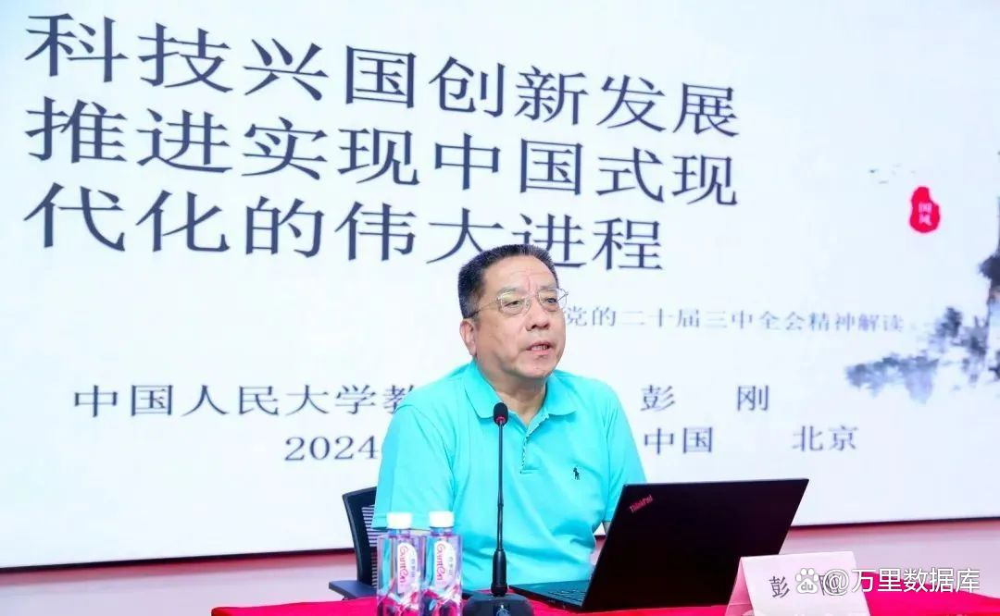
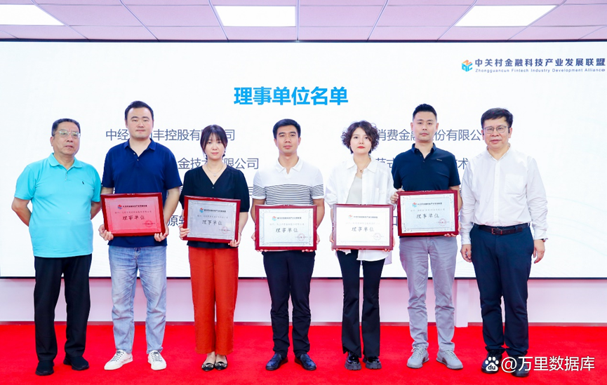

助力金融科技发展 万里数据库当选中关村金科产业联盟理事单位
近日，中关村金融科技产业发展联盟（以下简称“联盟”）联合中关村互联网金融研究院
（以下简称“研究院”）举办的《2024中关村金融科技大讲堂——解读三中全会：科技金融助力中国式现代化
暨会员座谈会》在北京成功召开。此次会议汇聚众多金融科技企业代表，共同探讨科技金融在中国式现代化建设
中的作用及改革对金融行业和科技发展的影响和机遇。

万里数据库作为国产数据库杰出代表受邀参会，正式当选中关村金融科技产业发展联盟理事单位，标志着万里
数据库在金融领域的自主创新、企业影响力与行业贡献受到业内认可。
本次会议邀请中国人民大学经济学院教授、中华外国经济学说研究会发展经济学分会副会长、中国人民大学
发展中国家经济研究中心主任彭刚，围绕“科技兴国创新发展推进实现中国式现代化的伟大进程”主题进行
深度分享。
彭刚教授深度剖析了党的二十届三中全会《决定》精髓，对于锚定宏伟目标的关键作用及深远意义，探讨了
科技兴国战略下，如何通过自主创新与国际合作并行，激发科技发展新动能，推动经济高质量发展，从而有力
促进中国式现代化这一伟大历史进程的加速实现。

会上，联盟为新加入的会员单位举办了授牌仪式，万里数据库现场接受授牌，正式成为理事单位。未来将与
联盟内众多领军企业共同积极参与联盟各项活动，紧跟国家发展脉搏，充分发挥科创企业的使命感，全面落实
推动金融科技领域的创新发展。

作为国内领先的安全可靠数据库产品与服务提供商，万里数据库为金融信创国产化与产业数字化转型提供了
多样化的解决方案，现已形成安全数据库软件GreatDB、数据库运维管理平台GreatADM、数据迁移服务平台
GreatDTS等适用金融场景的一站式解决方案，在多家银行、证券、保险等金融机构落地实施，实现超2000个
业务场景的实际落地应用，为金融行业用户提供安全高效和高性价比的数据库解决方案。
党的二十届三中全会中通过的《中共中央关于进一步全面深化改革，推进中国式现代化的决定》
（以下简称《决定》）中明确提出推进高水平科技自立自强。同时也指出，要构建同科技创新相适应的科技
金融体制。
科技金融作为“五篇大文章”首篇，被赋予了新的时代内涵。发展科技金融能有效提升金融服务实体经济能效，
为加快实现高水平科技自立自强提供有力支撑，以金融与科技深度融合促进现代化产业体系建设，为全面建成
社会主义现代化强国夯实物质技术基础。
作为联盟理事单位，万里数据库将协同政产学研用等多方资源，充分发挥金融科技领域的产品技术、应用实践
等优势，推进金融创新与科技赋能深度融合，积极开展金融科技产业标准制定、产业研究、政企对接等工作，
为助力金融科技高质量发展贡献力量。